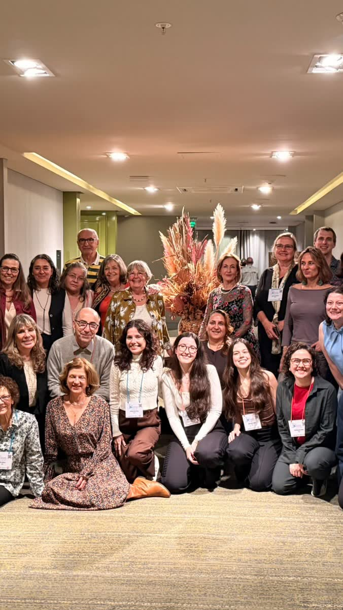
IMMCA at the Neurotoxicity Society meeting
In Montevideo we presented our work alongside some 200 specialists from around the world.
View on InstagramWe study how neurodegenerative diseases begin, and develop new tools to detect and treat them. We do it alongside healthcare teams, research groups and technology-based companies.
Institute for Research in Applied Molecular and Cellular Medicine · A research unit under triple affiliation: CONICET, UNT and SIPROSA
Research · Teaching · Transfer



In Montevideo we presented our work alongside some 200 specialists from around the world.
View on Instagram
During the 27th Augusto Palavecino Scientific Conference, students and graduates learned about the research in our laboratories.
View on Instagram
Álvaro Luna Mercado took part in the meeting of the Ibero-American Aptamer Network (REDIBA) and in an international course of the Argentine-Brazilian Biotechnology Center.
View on Instagram
Valentina Budeguer, a doctoral student at IMMCA, is taking part in the international course “Small Brains, Big Ideas” in Las Cruces.
View on Instagram
CONICET NOA Sur launched its services platform for northwestern Argentina. IMMCA offers five technology services there.
View on PLASENOA
The UNT School of Biochemistry, Chemistry and Pharmacy recognized her work, which was selected for the AUGM Young Researchers Conference in Brazil.
View on Instagram
She was selected for the first Neuroscience School and presented her work at the FALAN congress, together with Valentina Budeguer.
View on Instagram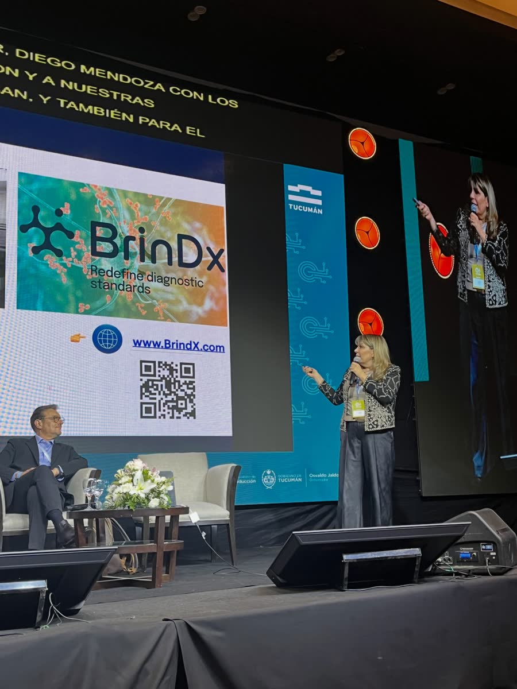
We told the story of how early questions about protein aggregation led to new technologies for neurodegenerative diseases.
View on Instagram
He was selected as an Ambassador for “Voices of AD/PD”, one of the leading international conferences on Alzheimer’s and Parkinson’s disease.
View on Instagram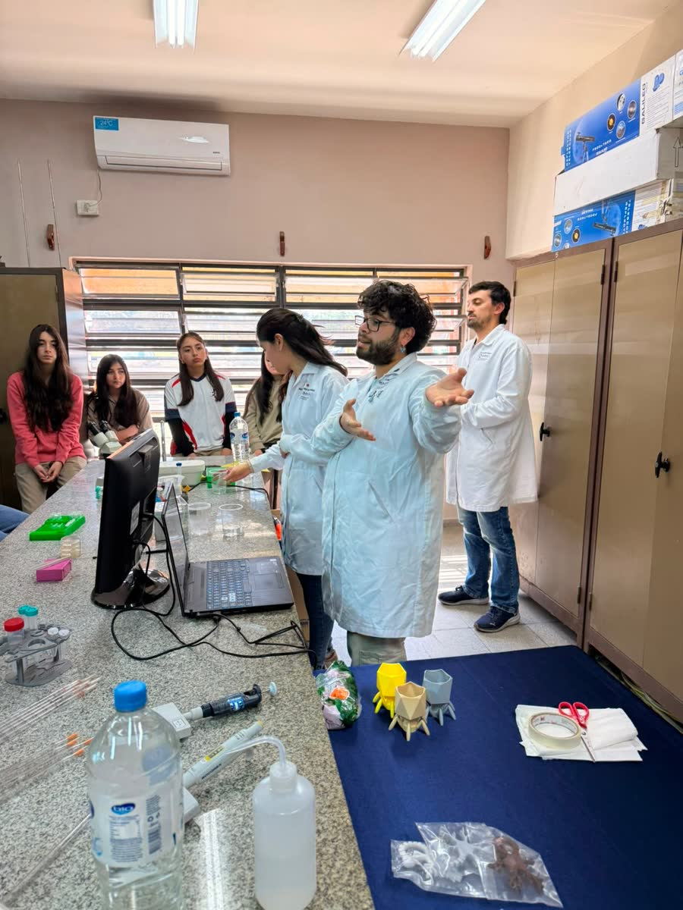
We welcomed students with stands and posters, and our director gave a talk at the Instituto Técnico de Aguilares.
View on Instagram
We redesigned the linker that joins the two parts of Pegasus and obtained three new molecules that retain its ability to interfere with alpha-synuclein aggregation.
View on Instagram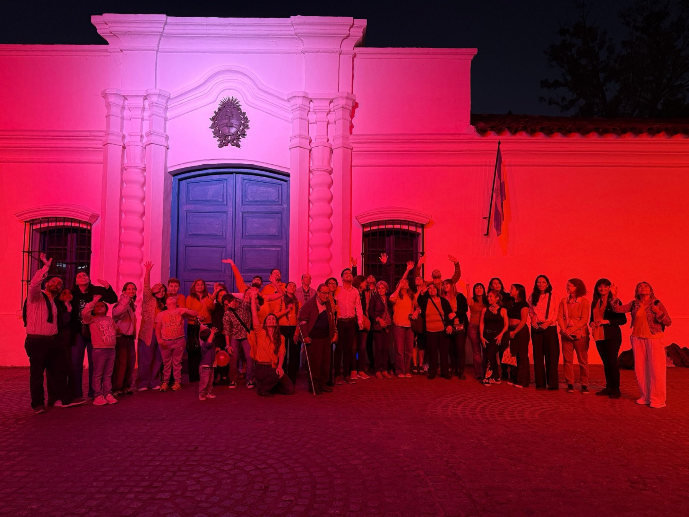
An initiative of IMMCA together with UNT, CONICET, the Ministry of Public Health, the City of San Miguel de Tucumán and Hospital Padilla.
Read on CONICET NOA SurResolution 1204/SPS/25 approves the agreement with SkyBio LLC and recognizes IMMCA as the site where the compound was developed.
Read on the Ministry websiteThe startup born at IMMCA won the Instituto Balseiro business plan competition, among 34 projects from across Argentina.
In preclinical studies, Pegasus, designed at IMMCA with UBA and SkyBio, improved symptoms and protected neurons.
Read on CONICETWhat we know about the disease today, and how the institute is working to diagnose it earlier.
Read on immca.conicet.gov.ar
Recognition of IMMCA’s contribution to science and innovation, and of its commitment to public health during the COVID-19 pandemic.
New diagnostic methods for neurodegenerative diseases.
Read on immca.conicet.gov.arA serological test developed in Tucumán that delivered strong results during the pandemic.
Read on CONICETA study with IMMCA participation confirmed how long the response lasts after vaccination.
Read on CONICETThe director presented the IMMCA case: three parent institutions and close ties with the private sector.
Read on immca.conicet.gov.arAmyloid fibers to remove urethanes from export wines.
Read on immca.conicet.gov.arCooperation with French teams on Parkinson’s and Alzheimer’s disease.
Read on immca.conicet.gov.arBasic science, clinical research and partnerships with industry, in an institute under triple affiliation: CONICET, UNT and SIPROSA.
Figures as of 17 November 2026. The articles are those published since the institute was created; the library also includes earlier work by the team.
The institute grew out of a protein biophysics group. As our questions moved closer to Parkinson’s disease, we formed a consortium with Dr Rita Raisman-Vozari’s team at the Paris Brain Institute, a collaboration in which each group took on the other’s expertise. That alliance, and the funding it brought with it, provided the critical mass needed to fill a strategic gap in northern Argentina: a biomedical research institute.
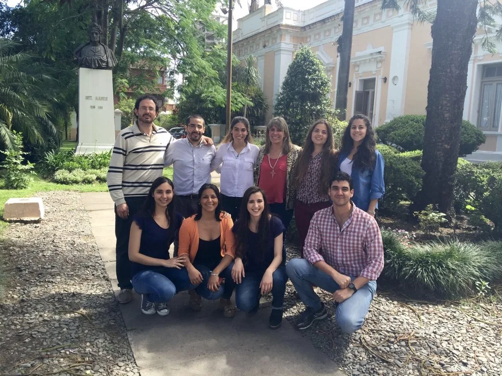
Back in Tucumán, we built our own group at INSIBIO, the Higher Institute for Biological Research (CONICET-UNT), where we were trained in protein and membrane biophysics. We studied amyloid aggregation from a physics standpoint, still without cell cultures or in vivo models.
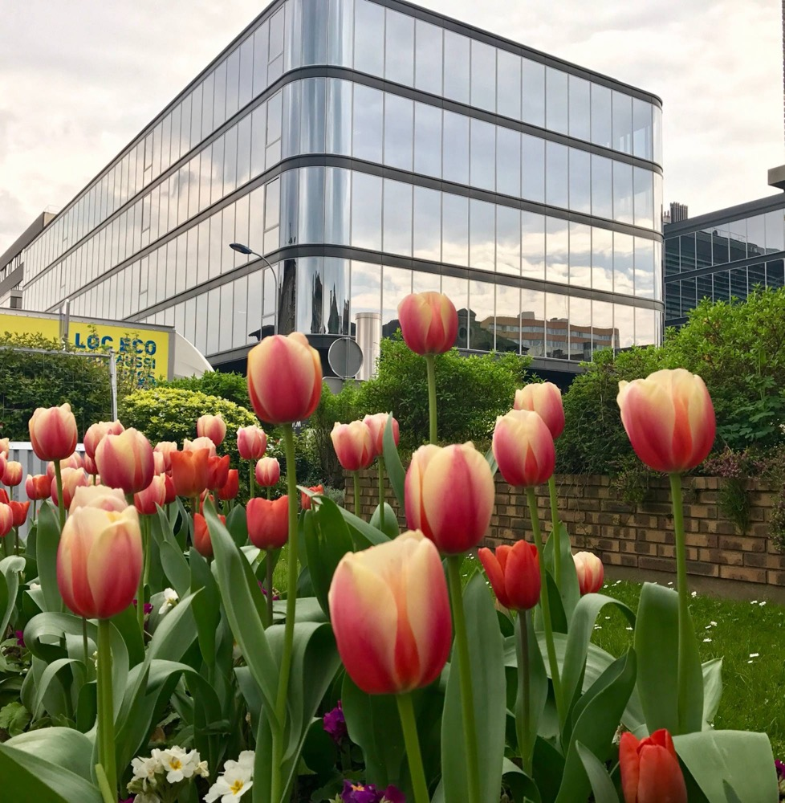
We began working with Rita Raisman-Vozari’s neurobiology group at the Paris Brain Institute (ICM). We set up a consortium in which each group learns from the other: our biophysical knowledge comes to bear on the molecular basis of neurodegeneration, and neurobiology enters the Tucumán laboratory.
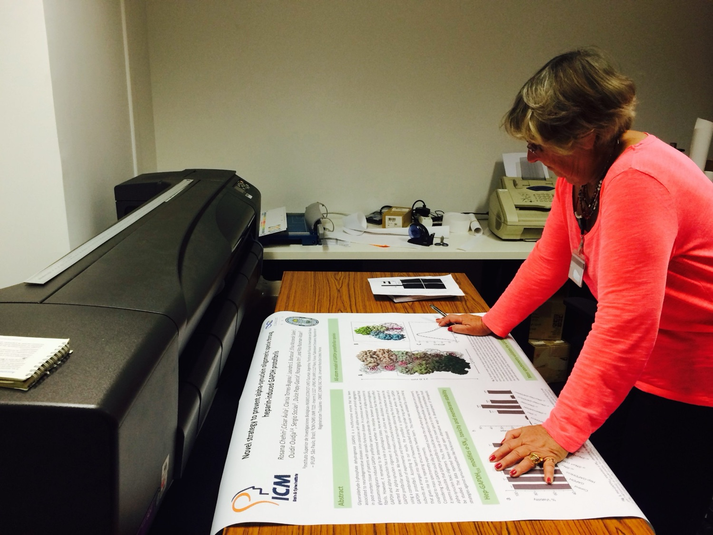
With Houssay fellowships, the BEC.AR, ECOS-Sud and Egide programmes and the UNT–Paris agreement, our fellows take up placements at the ICM and we host researchers as visiting professors. National and international grants let us equip the laboratory and reach the critical mass needed to apply for an institute of our own.
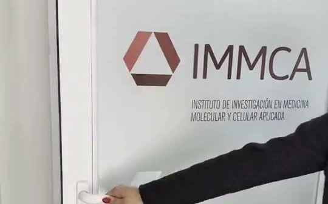
The growth of the research group at INSIBIO and the need to strengthen biomedical research in northern Argentina gave rise to a joint proposal from CONICET, the UNT and SIPROSA. The three institutions, with different organisational cultures, shared one aim: to make day-to-day work between researchers and health teams easier. To that end, they proposed moving the group out of INSIBIO and setting up a laboratory inside the public health system.
In April 2016 the first formal application was submitted to create a new executive unit under three institutions.

In Scientific Reports we showed that doxycycline could change the way alpha-synuclein — a protein linked to Parkinson’s — aggregates, favouring the formation of aggregates that showed no toxicity in our assays.
The coverage the study received in the national press caught the attention of an angel investor, whose support allowed us to carry this line of research forward. Years later, that work would give rise to Pegasus, a drug candidate for Parkinson’s.
We did it ourselves, by hand. We packed, loaded the cars, unpacked and assembled the equipment with our own hands: the safety cabinets, the incubators and the rest of the instruments were put together by the group’s own researchers and fellows, with no company to install them.
And before any of that, the place had to be made habitable: mopping the floors, sweeping, cleaning the benches. Researchers, fellows and students, bucket and mop in hand.
The group formed at INSIBIO thus came to have a laboratory of its own inside the public health system.
We opened the IMMCA with provincial and national authorities, business people from Tucumán and the United States ambassador to Argentina. Among those with us was Claude Burgio, the angel investor who, after learning about our work on doxycycline and alpha-synuclein, decided to support the continuation of our Parkinson’s research.
The opening made real the project CONICET, the UNT and SIPROSA had driven together to bring biomedical research closer to the public health system.
Claude Burgio learned about our work on doxycycline and alpha-synuclein through the press, and decided to back it with his own money. That is unusual: basic science in northern Argentina almost never attracts private investment, least of all at a stage when there is no product to show.
That support sustained the line of research that years later led to Pegasus. Burgio has accompanied the institute ever since, and was there at the opening.
The National Senate recognised our research group with the Senator Domingo Faustino Sarmiento Honourable Mention, the distinction the chamber awards, under Parliamentary Decree 640/04, to those whose work improves the life of their community.
The diplomas, signed by the President of the Senate, recognise “enterprising work, aimed at improving the quality of life of one’s fellow citizens, of institutions and of their communities”. It came a year after the work on doxycycline and alpha-synuclein, which drew attention across the country, and the same year the institute opened.
We travelled to Buenos Aires to receive it.
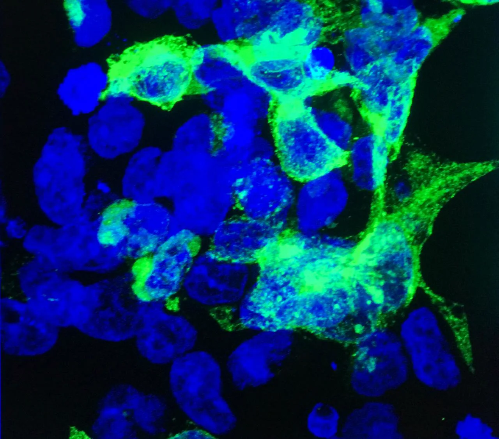
In work led by Sergio Socías and published in Progress in Neurobiology, we identified a chemical feature shared by tetracyclines and other compounds able to interfere with protein aggregation. We proposed that this feature might explain how these molecules interact with aggregates.
The finding guided the next step in our research: designing tetracycline derivatives that kept their action on toxic aggregates without antibiotic activity.
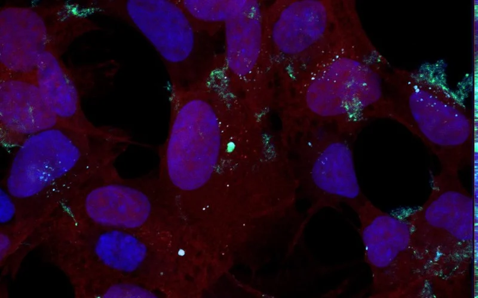
Pegasus began with a question: could we add a new function to a tetracycline and still keep its ability to protect neurons? To explore that idea we designed a molecule combining a non-antibiotic doxycycline derivative with dopamine, synthesised together with Dr Oscar Varela’s group (CIHIDECAR, CONICET–UBA). The aim was to bring together in a single candidate two actions that matter in Parkinson’s: activating dopamine receptors and protecting neurons.
That same year CONICET, the UNT, SIPROSA, the UBA School of Exact and Natural Sciences and SkyBio signed an agreement to advance the development of Pegasus.
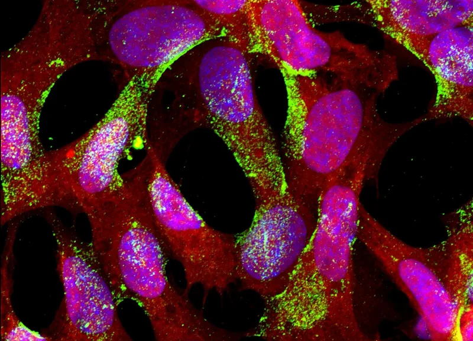
Pegasus’s preclinical studies were carried out entirely at the IMMCA, with our own team and our own platforms. These are the assays in cell models and in organisms that make it possible to assess how a molecule behaves and what effects it produces, before a study in people can even be proposed.
Those results underpinned the patent application for the compound, granted in 2024.
During the pandemic we developed InmunoCoviTuc to help Tucumán’s public health system track the antibody response after SARS-CoV-2 infection and after vaccination. We designed and set up the entire assay at the IMMCA, including the production of its antigen: a recombinant version of the receptor-binding domain (RBD), the region of the Spike protein the virus uses to recognise human cells.
With this assay, and together with the province’s health teams, we studied how antibodies evolved over the six months following Sputnik V vaccination in a cohort of 602 health workers. The results were published in The Lancet Regional Health – Americas.
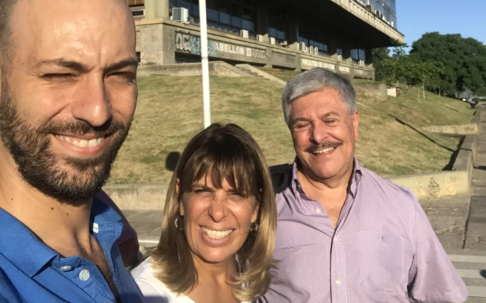
We turned a finding from our own research into a technology with diagnostic potential. Together with Dr Oscar Varela’s group (CIHIDECAR, CONICET–UBA), we chemically modified tetracycline derivatives so that they could selectively recognise and capture aggregated alpha-synuclein, a form of the protein associated with Parkinson’s. That is how Aristaeus was born.
In 2021 we signed the agreement to take its development forward. The same biocapture strategy can be built into electrochemical biosensors and into antibody-assisted biochemical assays alike, with the aim of detecting those aggregates in biological samples.
The Presidency of the Chamber of Deputies of Argentina awarded the Deputy Dr Juan Bautista Alberdi Honourable Mention to the IMMCA, for its contribution to science and technological innovation and its commitment to public health during the COVID-19 pandemic.
This time the distinction went to the institute as such: the diploma bears its full name. What it recognised was, above all, InmunoCoviTuc, the antibody test we developed entirely here, with which more than 5,000 determinations were carried out, which was transferred to the SIPROSA Public Health Laboratory and which led to four published papers with population studies in Tucumán.
Much of the team travelled to Buenos Aires to receive it.
Together with neurologists at Hospital Padilla, we organised the recruitment of Parkinson’s patients from north-western Argentina and their genetic characterisation. That work feeds into LARGE-PD, the Latin American consortium on the genetics of Parkinson’s, and through it into the Global Parkinson’s Genetics Program (GP2).
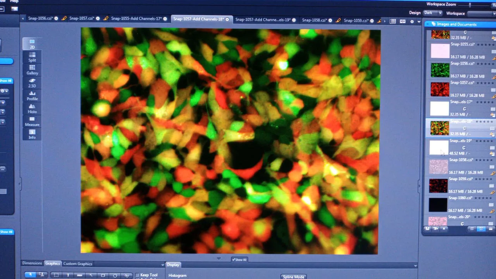
The patent for the Parkinson’s drug candidate is granted in the United States and the European Union, and is still pending in six other countries.
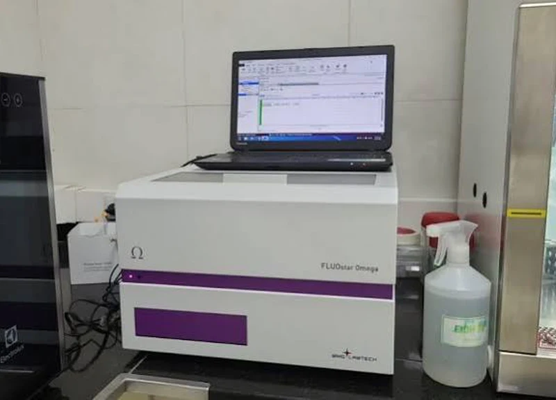
The Aristaeus patent application moves into the national phases: it stops being a single international filing and opens up, country by country, in each territory where protection is sought.

The licence for the Pegasus patent is granted to SkyBio LLC, the company taking its development forward. Technology born at the institute passes into the hands of those who can fund and run the stages ahead.
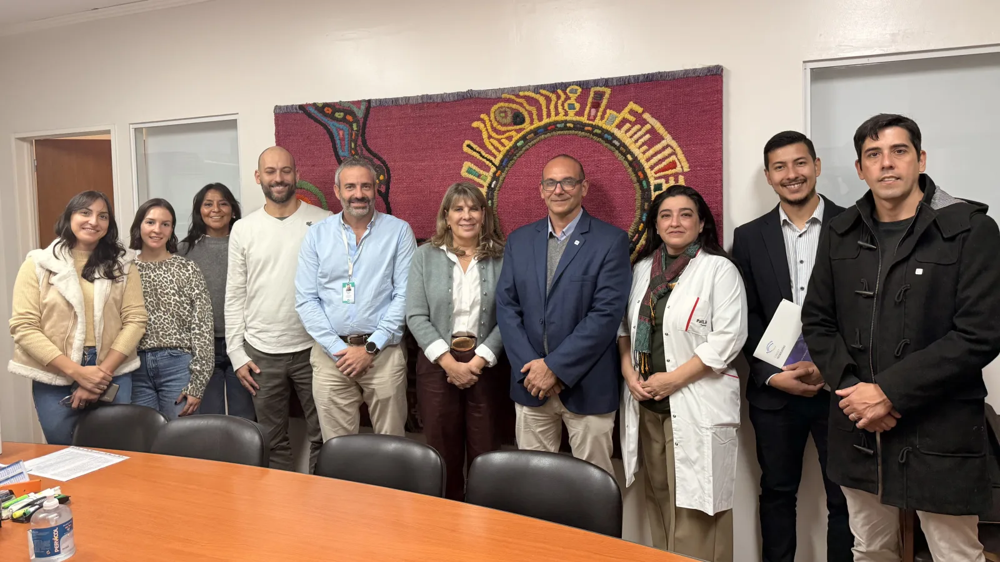
With Sanatorio 9 de Julio and the pathology laboratory PatLab we signed a three-way agreement with CONICET to study the gut–brain axis, using human appendix samples.
This sets up a circuit that did not exist locally: operating theatre, pathology and research connected.
We have begun working with the Malbrán Institute on setting up RT-QuIC, the technique that amplifies misfolded alpha-synuclein until it becomes detectable even when very little is present.

BrinDx SA is incorporated, the technology-based company born at the institute. It works on the window before the symptoms, with radiotracers to image protein aggregates and with the detection of markers in extracellular vesicles isolated from blood.
Its team brings together UNT students and graduates with researchers from CONICET and SIPROSA.
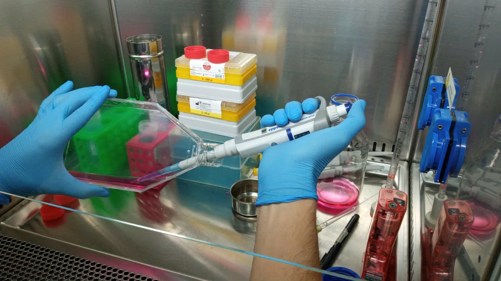
The regulatory preclinical studies were carried out in three animal species, under FDA standards and led by KeifeRx, and confirmed the results we had obtained at the IMMCA.
That completes the pre-IND package submitted to the FDA. Pegasus has not yet been tested in people.
Scheduled for February: the step before requesting authorization for first-in-human studies.
El Institut du Cerveau, at the Pitié-Salpêtrière Hospital, is one of the largest neuroscience research centres in Europe. For years the group’s fellows and researchers spent time in Dr Rita Raisman-Vozari’s laboratory. They came back with the techniques they later set up in Tucumán: protein purification, fluorescence microscopy and cell models of neurodegeneration.

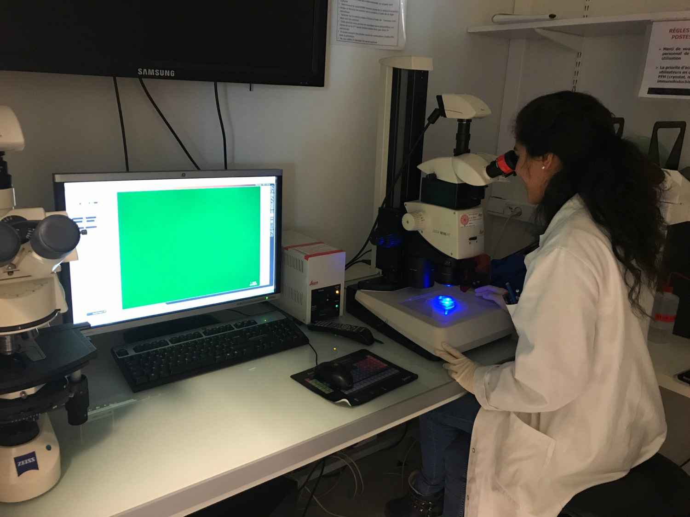
The IMMCA was created in Tucumán to bring biomedical research closer to the needs of the public health system. The questions that arise in patient care help steer the work in the laboratory. In turn, laboratory findings can become new diagnostic tools and therapeutic strategies. That back and forth is the basis of translational medicine.
The National University of Tucumán, CONICET and the Tucumán Provincial Health System (SIPROSA) created the institute under triple affiliation, on equal terms, building it around the biomedical research teams and projects already working in the province. SIPROSA provided the site at Dorrego 1080, where the first stage of the building was put up, with space for cell culture, confocal microscopy and protein production.
Since then the IMMCA has expanded its facilities and added equipment to study disease mechanisms, develop new technologies and assess their potential application in health.
UNT and CONICET contribute the researchers, the training of fellows and the underlying scientific questions.
SIPROSA contributes the building, the services and something even more valuable: patients' real-world problems and clinical studies.
Private partners such as SkyBio fund development and bring the results to market: new drugs and diagnostic methods.
Translational medicine science, healthcare and industry working together
Our own laboratories at Dorrego 1080, San Miguel de Tucumán: eleven rooms and 120 instruments under a documented maintenance and calibration plan, instrument by instrument, each with an assigned owner and frequency. Equipment and quantitative analysis tools for biomedical research.
High-resolution fluorescence imaging of cells, tissues and model organisms, with z-series and three-dimensional reconstruction. The platform brings together the confocal, the inverted fluorescence microscope and phase contrast, so that a single sample can be followed from culture through to the final image.
We also have our own image quantification workflows, assisted by artificial intelligence, which we use in our research.
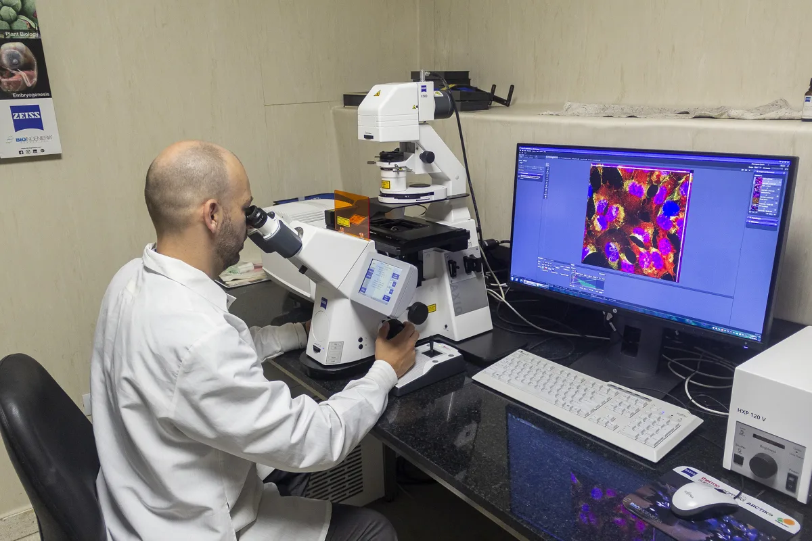
A room with an airlock and HEPA-filtered positive pressure, where the cell lines we work with are maintained and treated: SH-SY5Y, HEK and BV2, among others. It is the starting point for almost every assay at the institute, from compound screening to protein aggregation models.


Expression, cell lysis and purification of recombinant proteins such as alpha-synuclein and tau, with detection by electrophoresis and Western blot. We produce the material used by our own assays and by other laboratories in the country.

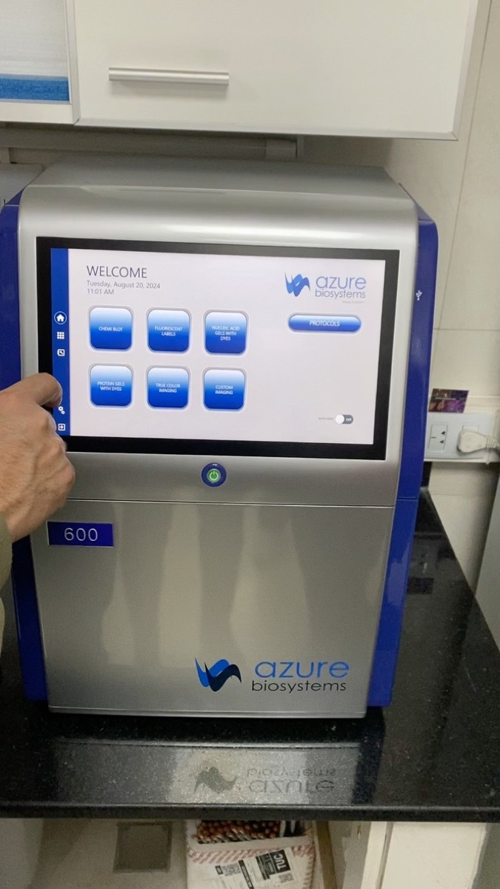
Here we follow in real time how a protein folds, aggregates, or stops doing so in the presence of a compound. We measure aggregation kinetics, the size and stability of particles in suspension, and optical microplate assays, immunoassays included.
A room dedicated to the institute’s in vivo assays, with its own biosafety cabinet. It is where we work with C. elegans, the model we use to see whether a compound protects neurons in a whole organism and not only in a dish.
Expression in bacteria, cultures under controlled shaking, and the molecular biology work that underpins protein production: cloning, amplification and checking of the constructs.
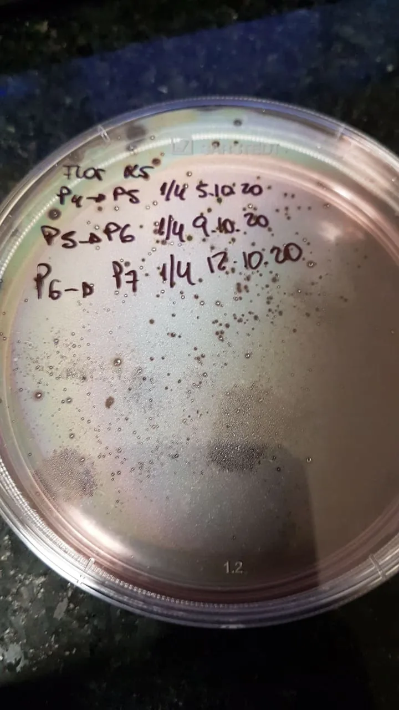
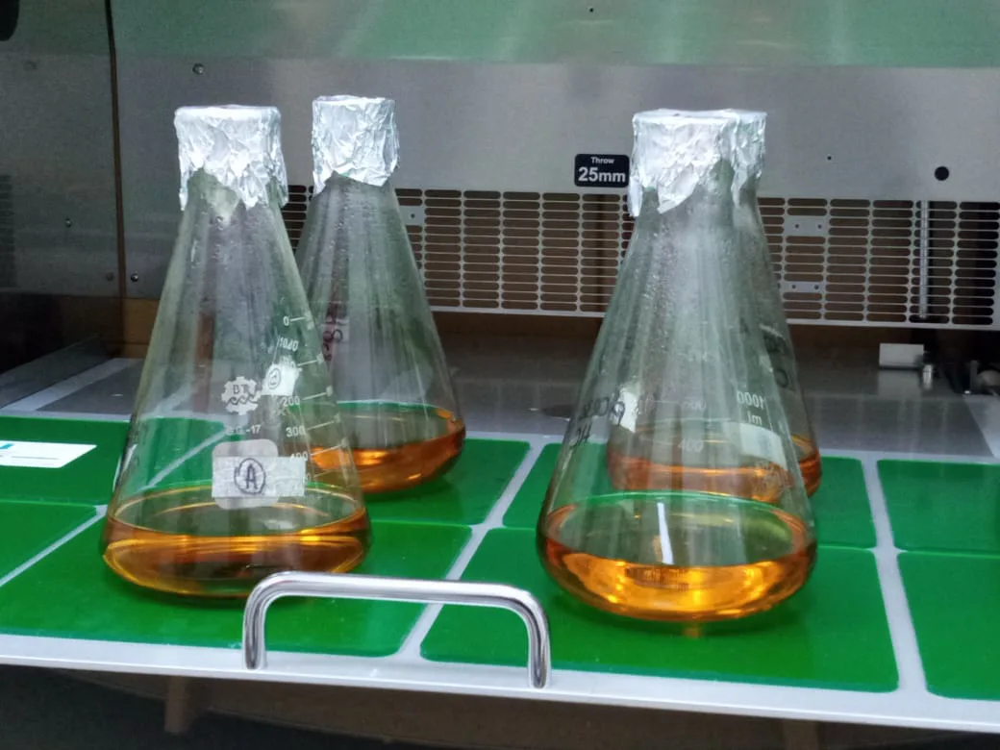
Researchers, companies and public bodies can access these platforms through our technology services.
We aim to diagnose earlier and treat better in neurodegenerative disease.
Each line links basic science with results that go beyond the laboratory: patents, kits, licenses and services. Lines marked VT involve technology transfer partnerships with companies or institutions.
What makes a protein that helps the neuron end up harming it?
Alpha-synuclein and tau are proteins normally present in neurons, where they do important work. Alpha-synuclein takes part in communication between neurons, while tau helps maintain the internal structures that carry materials along the cell. Under certain conditions these proteins change shape and begin to bind to one another. As they build up into aggregates, part of the protein may stop doing its usual job. Some of those aggregates can also damage neurons, or act as “seeds” that induce other molecules of the same protein to aggregate. These processes are studied in diseases such as Parkinson’s and Alzheimer’s.
How do we recreate this process in the laboratory?
At the IMMCA we reproduce different stages of aggregation in complementary models. With purified proteins, we follow how aggregates form and what properties they have. In cell culture, we watch how they interact with cells and what damage they can cause. We also use Caenorhabditis elegans, a small transparent worm that lets us observe neurons in a living organism and study how their function changes.
Why do we do it?
Recreating these stages lets us understand how the damage begins and test molecules that might intervene at different points in the process. We look for compounds able to reduce the formation of toxic aggregates, limit their spread, or protect neurons from their effects. That is how we select candidates to take forward in the development of new drugs.
On this line we collaborate with Dr Rita Raisman-Vozari and Dr Patrick Pierre Michel of the Paris Brain Institute (ICM), and with Dr Bruno Figadère of BioCIS (CNRS–Université Paris-Saclay). One example of this joint work is the design and evaluation of tetracycline derivatives without antibiotic activity, which we study for their ability to modify the aggregation of these proteins and protect neurons.
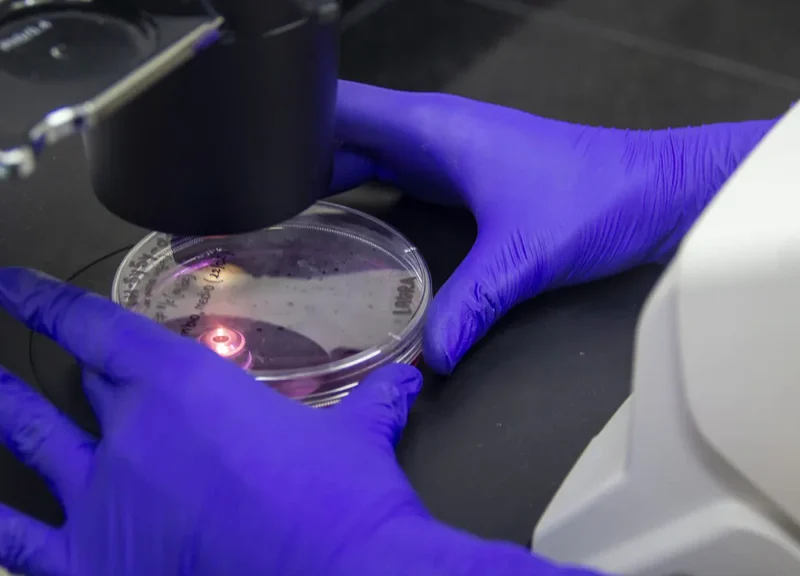
02We redesign tetracyclines — well-known antibiotics — so that they protect neurons without acting as antibiotics. That is how Pegasus came about: a dopamine–tetracycline conjugate that interferes with alpha-synuclein aggregation while also activating dopamine receptors.
Behind Pegasus lies a whole family of molecules built on the same scaffold. The technology is licensed and is now in advanced preclinical development, in the hands of the licensee company.
By the time the motor symptoms of Parkinson’s appear, a large share of dopaminergic neurons has already been lost. So we look for earlier signals: a biosensor, new PET radiotracers, and the RT-QuIC technique using locally produced reagents, with the aim of taking it to blood samples.
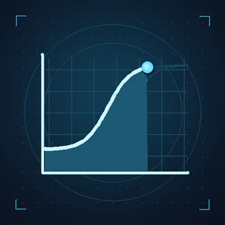
The most advanced project on this lineA biomarker is a measurable signal in the body indicating that a disease is present or progressing. Most neurological biomarkers in use today, such as NfL, GFAP or pTau, measure how much protein there is, and can also rise for other reasons.
RT-QuIC, a seed amplification assay (SAA), measures something else: whether the sample contains misfolded alpha-synuclein able to pass its shape on to other proteins — the biochemical hallmark of Parkinson’s disease. It can detect one aggregate among a billion normal molecules.
They measure quantity or damage. They are indirect.
It detects the protein shape that spreads the disease.
Lewy bodies, the lesion typical of Parkinson’s, are found to be made of alpha-synuclein.
First detection of aggregated alpha-synuclein in cerebrospinal fluid with RT-QuIC.
Detection in blood is achieved, a key step towards a simpler test.
The FDA issues a letter of support for the alpha-synuclein assay as a research biomarker.
Within a project of the Organization of American States (OAS), we advanced the implementation of RT-QuIC to detect seeding-competent alpha-synuclein aggregates associated with neurodegenerative disease.
The IMMCA produces recombinant human alpha-synuclein, used as the substrate in the RT-QuIC assay. Local production capacity is 100 mg per month.
We set up the assay with locally produced reagents. We are currently advancing its validation in cerebrospinal fluid (CSF) samples and implementing quality management procedures.
We are studying the application of RT-QuIC to extracellular vesicle fractions isolated from plasma and selected for their possible neuronal origin. The aim is to determine whether these fractions allow seeding-competent alpha-synuclein aggregates to be detected in blood samples.
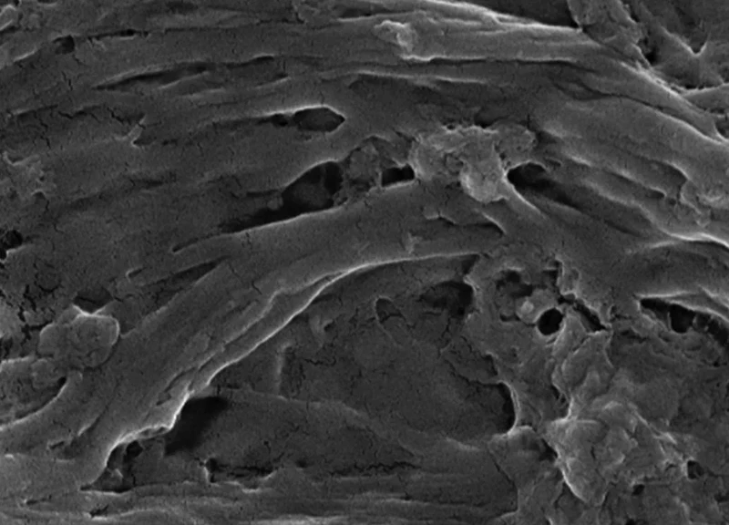
04We produce alpha-synuclein and tau as monomers, fibrils and fluorescent fibrils, which other laboratories use as reference material in their own assays. It is an in-house capability that is uncommon in the country.
With those same amyloid fibrils we work in another direction: using them as a support to immobilise enzymes of industrial interest, with applications in biodiesel, wine and olive oil.
The Global Parkinson's Genetics Program (GP2) is an ambitious programme to genotype more than 250,000 volunteers worldwide in order to better understand the genetic architecture of Parkinson's disease (PD). GP2 is a resource programme of Aligning Science Across Parkinson's (ASAP) and is implemented by The Michael J. Fox Foundation.
The IMMCA takes part through LARGE-PD, the consortium coordinated by Ignacio Mata from the Cleveland Clinic. César Ávila leads the north-western Argentina node: since 2023 he has organised, together with neurologists at Hospital Padilla, the recruitment of patients and the genetic characterisation of the region’s Parkinson’s population.
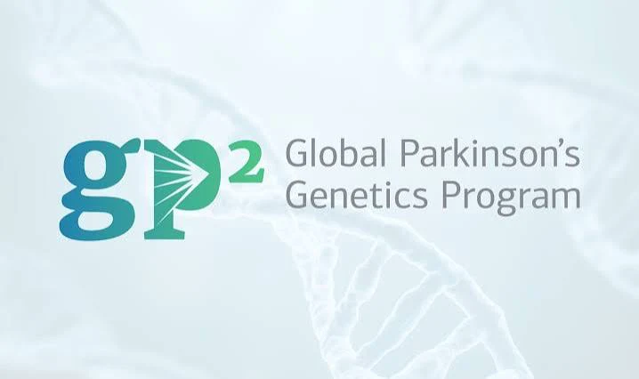
Go to the programme’s websiteThe institute’s first result within GP2 is already published: a paper in Movement Disorders, with Ávila as first author, which analysed the DNAJC13 gene in more than 44,000 patients and 27,000 controls of diverse ancestries and found no evidence supporting its role in the disease. Ruling out a candidate gene is a result too.
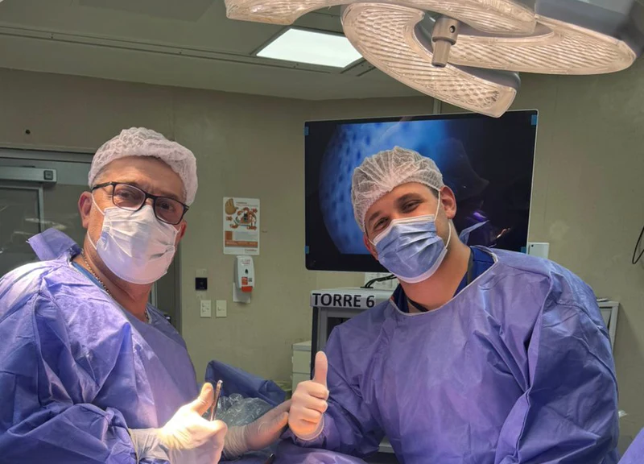
06Parkinson’s has long stopped being thought of as a disease of the brain alone. There is evidence that in some patients alpha-synuclein begins to misfold in the nervous system of the gut and travels to the brain along the vagus nerve, years or even decades before the first motor symptom. This is Braak’s hypothesis, and what are now called body-first models.
The appendix came into the picture once it turned out not to be the useless organ it was thought to be: it is lymphoid tissue in direct contact with the microbiota, and it accumulates alpha-synuclein. We are interested in it as a window. It is tissue removed on routine surgical grounds that may hold the early trace of the disease.
Under a three-way collaboration agreement between CONICET, Sanatorio 9 de Julio and the pathology laboratory PatLab, we have set up a circuit that did not exist locally: operating theatre, pathology and research connected. Each appendix removed is processed, with the patient’s consent, within controlled time windows and preserved in duplicate — formalin-fixed and paraffin-embedded, and frozen at −196 °C — with full clinical traceability.
The research changes nothing about the care the patient receives. It does not alter the medical indication, the surgical technique or the timing in theatre, and it does not interfere with the routine pathology work-up: we work on the material left over once the diagnosis has been made. Everything is carried out with the approval of the Ethics Committee of Sanatorio 9 de Julio.
Three analyses run on that material: RT-QuIC, which amplifies misfolded alpha-synuclein and detects it even when very little is present; immunohistochemistry for total alpha-synuclein and for the form phosphorylated at serine 129, quantified with automatic segmentation algorithms; and measurement of inflammatory markers. This stage is about setting things up: the aim is to leave behind a validated platform and a well-made sample collection, not yet clinical conclusions.
Tucumán is the world’s leading producer and exporter of lemons. Every fruit that enters the industry leaves its peel behind, the largest waste stream by volume. That peel contains phenolic compounds with antioxidant capacity, and the question is whether any of them can slow the protein aggregation behind neurodegenerative disease. We study this under an agreement signed with the EEAOC.
The Obispo Colombres Agro-industrial Experimental Station (EEAOC) prepares the extracts from the Genova, Eureka, Lisbon and Limoneira varieties, using different extraction processes: prolonged maceration and subcritical fluid with ethanol, the latter compatible with food use. At the institute we characterise and test them.
The circuit has three steps. Electrochemical characterisation, which describes the redox profile of each extract and allows processes to be compared at equal mass. A cytotoxicity check in cell culture, to rule out damage to the cell. And aggregation assays for alpha-synuclein and tau, following the kinetics of fibril formation to see whether the extract delays or reduces it.
The project is at the screening stage: first we must decide which variety and which extraction process concentrate the activity, and only then identify the molecules responsible. The results obtained so far are preliminary and unpublished.
Click on a name to see that person’s career. Each card links to the official CONICET record, with the full list of projects and output.
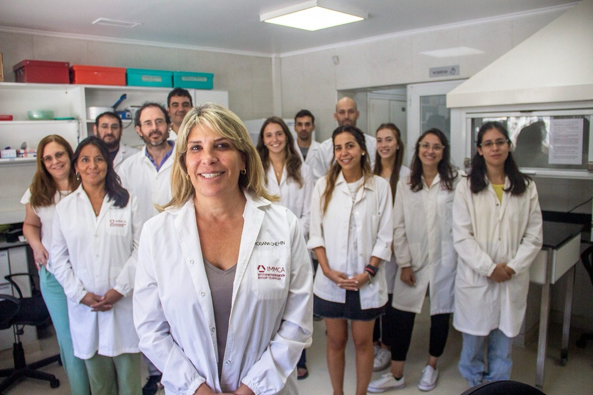
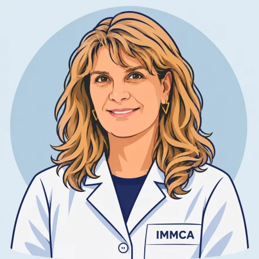
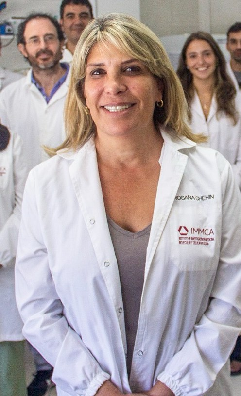
CONICET Principal Researcher and Full Professor of Biological Chemistry at the National University of Tucumán. Biochemist, top of her graduating class, and Doctor in Biochemistry with distinction.
She trained in protein spectroscopy at the University of the Basque Country and was a visiting professor at Université Paris-Est. She served as Secretary of Science, Art and Technological Innovation at the UNT, and is now a member of the Academy of Medical Sciences of Tucumán and of the editorial board of Frontiers in Aging Neuroscience.
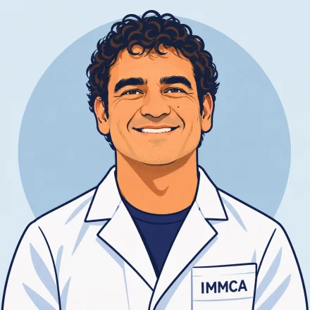
Biophysicist and bioinformatician. He combines computational simulation with spectroscopy to understand what shape proteins take, and why that shape is lost.


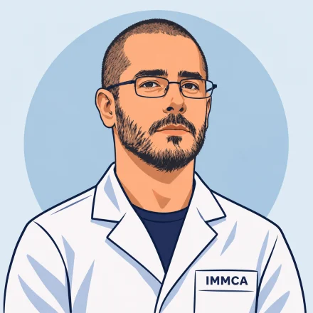
He works on drug repurposing: looking, among medicines already in use and known to be safe, for those that slow protein aggregation in the brain.
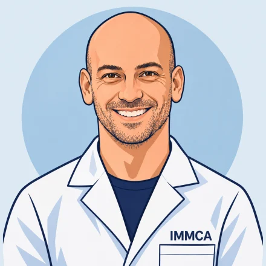
He studies lysosomes and autophagosomes: the system the cell uses to degrade what is no longer useful, and which stops working in neurodegenerative disease.
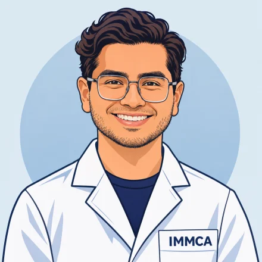
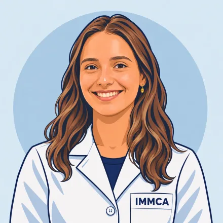
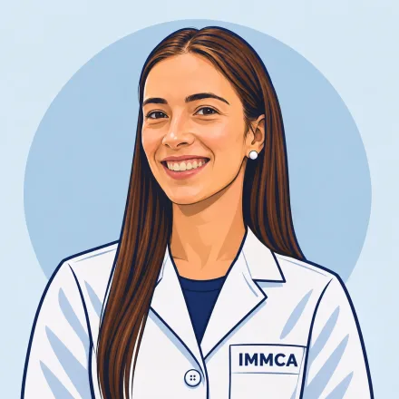
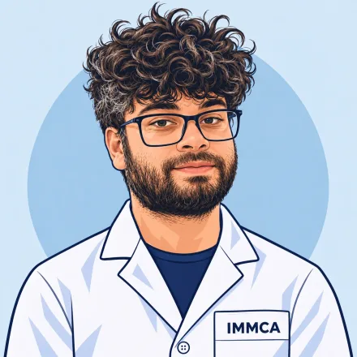
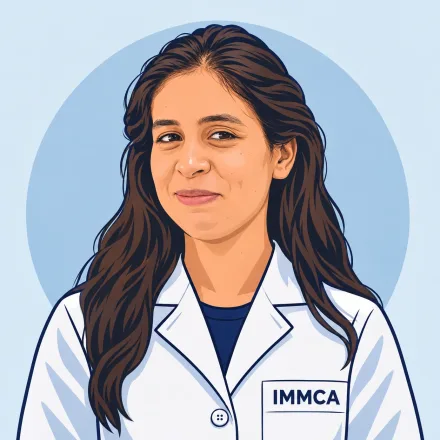
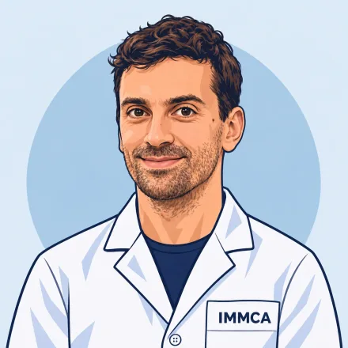
She works as CONICET Research Support Staff, handling management and technical and scientific support in the laboratory.
Source: the official IMMCA record at CONICET (BICyT), plus two doctoral students finishing their theses at the institute. To these are added UNT teaching staff, thesis students and undergraduates, several of them holding CIN scholarships or BEI scholarships from the SCAIT-UNT.
Life at the IMMCA also includes gatherings, celebrations and activities we share outside the laboratory.
Birthdays, asados, outings and match days: what happens between one experiment and the next.
More at @immca.labIf you are interested in doing your undergraduate thesis, PhD or postdoc in neuroscience, protein biophysics or health biotechnology, we would like to hear from you.
For advanced students of Biochemistry, Biotechnology and related degrees. You can apply for the scientific vocation scholarships of the National Interuniversity Council (CIN) or for the Research Incentive Scholarships (BEI) of the SCAIT-UNT.
With CONICET doctoral fellowships, including those for strategic topics, through the UNT doctoral program.
With CONICET postdoctoral fellowships, to join an ongoing research line or propose your own.
Interested? Tell us what you are interested in and we will point you in the right direction.
Contact usEvery publication by the team, including those from before the institute was created. The open-access ones can be read right here.
7researchers
We are a small team. This is what we have produced since 2018.
We also have a steady presence at national and international conferences, with communications and invited lectures.
Averages over 7 researchers and nine years of work, from 2018 to 2026 inclusive. The institute’s record at CONICET
Co-authors in 13 countries
We take our work to the meetings where neurodegeneration is discussed worldwide. Presenting a poster there means putting it to the test in front of the groups working on the same questions, and coming back with criticism, contacts and collaborations.
Two international patent families. The holders are CONICET, the UNT, the UBA and SIPROSA; the licensee is SkyBio LLC.
Designed and evaluated at IMMCA after more than a decade of research into the molecular basis of the disease, and synthesized at UBA.
Licensed to SkyBio LLC · preclinical stageTetracycline derivatives that recognise aggregated forms of alpha-synuclein, for incorporation into biosensing platforms. National phases filed in eight countries. Licensed to SkyBio LLC.
Favorable office action in the US, November 2026Pegasus (DAD9) is a drug candidate for Parkinson's disease designed at IMMCA. It has not yet reached patients: it has completed the preclinical stage and is now preparing to request FDA authorization for first-in-human studies.
Status as of 17 November 2026

SkyBio LLC completed the scale-up of the Pegasus synthesis under GMP certification. The patent family covers eight jurisdictions: granted in the United States and the European Union, and pending in six others. The technology is exclusively licensed to SkyBio LLC.

SkyBio LLC completed the preclinical programme through the CRO KeifeRx. It included toxicity studies, safety pharmacology, pharmacokinetics, possible interactions and formulation assessment.
SkyBio LLC has completed the pre-IND documentation. The meeting with the FDA is scheduled for February 2027, to discuss the plan for the first studies in people.
Once the regulatory requirements are met, the first clinical trial will focus on assessing the safety and tolerability of Pegasus.
More than a decade of research at the IMMCA, from an observation about an old antibiotic to a licensed drug candidate. Every milestone has its publication.
In Parkinson’s, alpha-synuclein forms toxic aggregates and the neurons that produce dopamine are lost. Dopamine, in turn, does not reach the brain well when given as a drug, and on oxidising it generates derivatives that damage the neuron.
We found that doxycycline, an antibiotic in everyday use, remodels alpha-synuclein aggregates and turns them into species that do not harm the neuron. That was the first clue: an old, familiar, safe molecule was doing something no one had asked of it.
We compared tetracyclines with one another: minocycline does not slow aggregation, but doxycycline and incyclinide do. Neuroprotection did not depend on antibiotic activity but on a precise part of the molecule. That opened the door to separating the two.
With computational chemistry and structure–activity relationship analysis we identified which part of the tetracycline recognises the structure of the aggregates: the keto-enol group. And we saw that removing the dimethylamine abolishes antibiotic activity while preserving the anti-aggregation effect. With that we could design tetracyclines that were not antibiotics.
A derivative of demeclocycline, without antibiotic activity, proved neuroprotective in experimental models. It stopped being an observation and became a lead compound, the first of the series.
If the tetracycline enters the brain and binds to the aggregates, it could serve as a vehicle. We attached a dopamine molecule to the tetracycline and blocked its primary amine by converting it into an amide, so that it cannot cyclise into aminochrome or melanin, the derivatives that make free dopamine toxic. The synthesis was carried out together with Dr Oscar Varela’s group at the UBA.
The conjugate works at both ends: it interferes with alpha-synuclein aggregation and with its spread between cells, and at the same time activates dopamine receptors. That is what makes Pegasus different from a purely symptomatic treatment.
Other molecules came from the same scaffold: DDOX, which prevents preformed alpha-synuclein fibrils from entering the cell, and a series of sulfur conjugates that widens the repertoire. The line stopped being a molecule and became a platform.
Terán et al., Scientific Reports 15 · Pernicone et al., ChemMedChem 2026
A patent family in eight jurisdictions: granted in the United States and the European Union, and pending in six others. The holders are CONICET, the UNT, the UBA and SIPROSA. The exclusive licence to SkyBio LLC was approved by Resolution 1204/SPS/25 of the Ministry of Public Health.
SkyBio LLC completed the GMP-certified scale-up and the preclinical programme through the CRO KeifeRx, and has the pre-IND documentation ready. The meeting with the FDA is scheduled for February 2027. The next challenge is to find out whether all of this translates into a benefit for patients.
A technology-based company born at the institute, to detect neurodegenerative disease before the symptoms appear.
By the time the first symptom appears, the disease has been advancing silently for years. BrinDx works on that earlier window, with two developments running in parallel: radiotracers to image protein aggregates at early stages, and the detection of markers in extracellular vesicles isolated from blood, a less invasive route than a lumbar puncture.
Its team brings together UNT students and graduates with researchers from CONICET and SIPROSA. It also supplies recombinant proteins and assay kits for research, and together with the institute is working to adapt the RT-QuIC technique with local reagents so that it works in blood.

CONICET High-Level Technology Services (STAN) for companies, public agencies and R&D institutions. Five of them are listed on PLASENOA, the CONICET NOA Sur services platform.
Name of the serviceEvaluation of potential modulators of the aggregation of proteins associated with neurodegenerative disease
We design in vitro assays to characterise candidates and compare formulations. Depending on the aim of the project, we assess antioxidant and anti-inflammatory activity, the effect on lysosomal stress and on the aggregation of alpha-synuclein and tau, and the effect on the spread of aggregates between cells.
Who it is forPharmaceutical, biotechnology and ingredient companies, and research groups wanting to characterise a candidate, compare formulations or choose which ones to take to the next stage.
Enquire about this service Technical sheetName of the serviceEvaluation of biological effects in cell culture
Cytotoxicity, metabolic activity, membrane damage, oxidative stress and inflammatory response. We compare concentrations and formulations to select candidates before moving on to more complex models.
Who it is forCompanies, institutions and research groups needing to evaluate formulations, biotechnology products, extracts, compounds, active ingredients or materials.
Enquire about this service Technical sheetName of the serviceAcquisition and analysis of confocal microscopy images
We acquire high-resolution fluorescence images on a Zeiss LSM 800, with 405, 488, 561 and 640 nm lasers, including z-series for three-dimensional reconstructions. We work with cells, tissues and materials compatible with fluorescence, and deliver the images in their original format so that you can analyse them.
Who it is forCompanies, institutions and research groups needing to visualise structures, molecules or processes in cells, tissues or other samples compatible with fluorescence.
Enquire about this service Technical sheetName of the serviceAnalysis of the size, distribution and stability of particles in suspension
We measure the size and distribution of particles in suspension by dynamic light scattering (DLS), from the nanometre to the micrometre scale. We also measure zeta potential, on the HORIBA SZ-100V2.
You can compare formulations and batches, or follow changes in particle size and distribution during storage to assess the stability of the dispersion.
Who it is forThe pharmaceutical, biotechnology, food, agro-industrial, environmental, mining, veterinary and materials sectors.
Enquire about this service Technical sheetName of the serviceSample analysis by absorbance, fluorescence and luminescence
We read your samples in microplate format on a TECAN Spark 1000 multimode reader, in all three detection modes: absorbance, fluorescence and luminescence. We run colorimetric, fluorometric and luminometric assays, measuring at a single point or following the change over time.
You can measure kinetics, enzyme activity and concentration–response curves, and compare many samples, concentrations or conditions in a single run.
Who it is forCompanies, start-ups, institutions and research groups needing to measure, detect or compare substances or processes.
Enquire about this service Technical sheetName of the serviceStatistical data analysis
We process, analyse and interpret your data to help you compare groups or treatments and present the results in reports, publications or presentations.
Who it is forResearch groups and companies with experimental data from R&D projects.
Enquire about this serviceName of the serviceDetermination of anti-SARS-CoV-2 antibodies by ELISA
InmunoCoviTuc was created at the IMMCA during the pandemic. The assay measures, in serum, antibodies directed against the RBD domain of the SARS-CoV-2 Spike protein. It was transferred to the SIPROSA Public Health Laboratory and was used in studies of the response to vaccination. Read the institute’s note.
Who it is forHealth institutions and research groups needing to measure the antibody response after vaccination or after SARS-CoV-2 infection.
Enquire about this serviceYou tell us what sample you have and what you want to find out.
We check whether the sample is compatible with the technique and whether the assay can answer your question.
We agree on conditions, controls, number of samples, timescales and cost.
We measure with the agreed controls and process the data.
We deliver results and their interpretation within the agreed scope.
We also sign R&D agreements with companies, such as those with SkyBio and BACON SAIC. View on PLASENOA · View on CONICET
Tell us what you need and we will reply with availability, terms and a quote.
Services coordinator
Sabrina Sequeira
Or write directly to…
Research with patient samples requires permits and management systems that not every institute has. These are ours, with the current status of each.
The laboratory is authorised by the Directorate General of Health Inspection of the Ministry of Public Health of Tucumán, under Resolution No. 012/DFSS of 9 January 2026, for a term of four years, until 8 January 2030.
Technical direction is held by Dr Rosana Chehín, with Dr César Luis Ávila as deputy technical director. That authorisation is what allows us to work with human and animal samples, and to carry out the initial processing of samples for clinical trials and for the development and set-up of biomedical technology. It is an unusual position for a research institute, and it is what makes possible, for example, the work with cerebrospinal fluid and blood in the RT-QuIC project.
See Resolution 012/DFSS PDF · digital signatureWe are certifying the institute’s quality management under the standard ISO 9001, on quality management systems, and we work according to Good Laboratory Practice (GLP), the framework that sets out how the studies of a research laboratory are planned, recorded and archived.
We have completed the first stage of the process under the supervision of Lorena Sola. The management systems are already in place and the institute is awaiting the certification audit.
ISO 9001 certification has not yet been granted: the institute has completed the implementation of the management systems and is awaiting the audit. We publish the true status of each procedure.
Research at a public institute does not end with the publication. We sustain two outreach lines: standing alongside people living with Parkinson’s and their families, and explaining in plain language what is being researched and what for.
Meetings, talks and open days together with patients, families, carers and associations, alongside the provincial health system.
See 02Outreach in the media, on social networks and through activities with schools and the community, done by the researchers and fellows themselves.
See April 11, 2026 · World Parkinson's Day
April 11, 2026 · World Parkinson's Day
At IMMCA's initiative, the Casa Histórica de la Independencia, the Bicentennial Monument, the UNT Rectorate, the MUNT, the Virla Cultural Center and other buildings in the province were lit up in red at 7 p.m., as in many cities around the world.
In front of the Casa Histórica we gathered — researchers, fellows, patients, families and carers — with readings, music and dancing. We asked the community to come wearing something red and to share the message: a disease that is often silent needs to be seen.
“Raising awareness is a fundamental step toward improving the quality of life of people with Parkinson's disease.”Rosana Chehín, Director of IMMCARead the story on CONICET NOA Sur


The call was shared on the social media channels of Hacé Click and Medios UNT. It was an initiative of IMMCA together with UNT, CONICET, the Ministry of Public Health, the City of San Miguel de Tucumán and Hospital Padilla.
In front of the Casa Histórica, patients, families, healthcare professionals and researchers shared a symbolic embrace, to the tango of Bondi Milonguero Tucumán. The following Monday, Hospital Padilla hosted a day with specialists and proposals to improve the quality of life of people living with Parkinson's disease.
Follow us at @immca.lab View on Instagram
View on Instagram  View on Instagram
View on Instagram Nadine Rojas lives with Parkinson’s and has turned that into awareness-raising work. The City Council of San Miguel de Tucumán presented her with a diploma of recognition, and we were there with her.
Much of what we know about what it is like to live with the disease we learned from people like her.
We organised it together with the Red Argentina de Parkinson and it brought to Tucumán physicians and representatives of patient associations from across the country. The auditorium filled up: patients, families, carers, health professionals and students.
La Dra. Tomoko Arakaki and Bondi Milonguero kicked off tango therapy in Tucumán, a practice that improves the balance and gait of those living with the disease. The Biological Chemistry II students from the FBQF accompanied the patients throughout the day: they served the coffee, helped them move around and kept an eye on their medication times.
And there was a moment no one expected: a clown therapist came into the hall and got everyone singing. Only afterwards did she tell us that she herself has Parkinson’s, and how she fights it.
Hover over a photo to see it larger
When the health system we are part of needed it, we developed our own SARS-CoV-2 antibody test to measure the immune response after infection and after vaccination. More than 5,000 determinations were carried out and four papers were published with population studies in Tucumán.
We are part of the Red Argentina de Parkinson (Argentine Parkinson's Network), with which we share activities such as World Parkinson's Day in Tucumán.
We explain, in plain language, what is being researched and what is known today: from the “Café con ALMA” meetings in 2019 to the Asociación Parkinson Neuquén congress in 2024.
We take part in the LARGE-PD consortium, which studies the genetics of the disease in Latin American populations.
Research in a public laboratory is funded by the whole of society. Sharing it is part of the job.
We loaded the car with microscopes, micropipettes and samples and drove 80 kilometres south, to the Instituto Técnico de Aguilares. The idea was simple: that the students should see with their own eyes what we do, and that no one should leave without looking down the eyepiece.
Several year groups came past the bench, from first to fifth year. We showed them what a cell looks like, how a sample is prepared and what it means to research a neurodegenerative disease. There were more questions than time.
Final-year students from the UNT School of Agriculture and Sugar Technology spend three months on placement at the institute. They do not come as visitors: they join the everyday work, with their own lab coat and a place at the bench.
They learn to prepare a sample, handle a micropipette, load and develop a gel, work in a laminar flow cabinet, and respect biosafety rules and the timings of an experiment, which are hardly ever the ones you would like. For many it is their first real contact with research, and they come away with something that is not taught in a classroom: knowing what a day of scientific work is like.
Students from the School of Agriculture and Sugar Technology, in the institute’s laboratory
media appearances since 2020, in local and national press, TV, radio, social media and official channels.
Source: IMMCA press archive and web search, November 2026.
The account is run by our own fellows, with two posts a week.
Follow on InstagramTraining researchers leaves a result that does not show up in publications: watching them grow elsewhere and feeling that what they learned in this group gave them a starting point. Those who did their final project, their doctorate or their postdoc here are now in other laboratories, in companies and in the health system. We follow every step they take, and celebrate each achievement as our own.
“Very happy to return to this lab that was a home to me. So glad to see my friends and colleagues grow and thrive.”Silvia Navarro, in the institute’s visitors’ book
Fundación Instituto Leloir
She works in the Cell and Molecular Neurobiology Laboratory.
Buenos Aires, ArgentinaInstitute of Experimental Pathology (IPE), CONICET
CONICET postdoctoral fellow, after a doctorate in Biological Sciences on strategies to prevent Trypanosoma cruzi infection. She works with molecular biology techniques: primer design, PCR, RT-qPCR and gene cloning.
Salta, ArgentinaBrinDx
He did his final-year project with the group. He now works at BrinDx, the technology-based company born at the institute.
San Miguel de Tucumán, ArgentinaNewcastle, United Kingdom
She did her postdoctoral stay with the group. This year she came back for a visit and signed the institute’s book.
Massachusetts General Hospital Cancer Center and Harvard Medical School
Postdoctoral researcher. She studies the metabolism of metastasising tumour cells. Pew Latin American Fellow since 2023.
Boston, United StatesDivision of Neurology (Faculty of Medicine and Dentistry) and Centre for Prions and Protein Folding Diseases, University of Alberta
He did his postdoctoral work with the group: he is first author of three of our papers between 2009 and 2012, on the amyloid aggregation of GAPDH. He now works on prion diseases and protein folding.
Edmonton, CanadaPuna Bio
Head of molecular biology at an agricultural biotechnology company born out of CONICET, working with extremophile microorganisms from the Puna.
ArgentinaINBIONATEC, CONICET and National University of Santiago del Estero
CONICET Assistant Researcher. She works on photochemistry and antimicrobial photodynamic therapy.
Santiago del Estero, ArgentinaNuestra Señora de las Mercedes Maternity and Gynaecology Institute, SIPROSA
Head of the microbiology laboratory, which serves some 3,500 people a month.
San Miguel de TucumánForensic Investigations Unit, Public Prosecution Service of Salta
Since 2022 he has worked on forensic genetics and instrumental analysis applied to judicial investigation, X-ray fluorescence among them.
Salta, ArgentinaCERELA, CONICET
CONICET Assistant Researcher. She studies how probiotics modulate the immune response in allergy and looks for new biomarkers. She teaches Immunology at the FBQyF-UNT.
San Miguel de TucumánMedpace, clinical research
Regulatory Submissions Coordinator III. She prepares the documentation with which clinical trials are filed with regulatory agencies. She joined in 2021 and has already moved through all four levels of the role.
Madrid, SpainScience teacher
She did her doctorate in the group, on the enzyme GAPDH. She now teaches science and is the mother of five.
A young institute is built by people who back it before there are any results. These companies, institutions and patient associations have supported the IMMCA’s work. Among them, institutes of CCT CONICET NOA Sur that entrusted their analyses to us.


 Puna BioBiotechnology with extremophile microorganisms
INSIBIOHigher Institute of Biological Research
CERELAReference Centre for Lactobacilli
PROIMIPilot Plant for Microbiological Industrial Processes
IBNInstitute of Neotropical Biodiversity
CIMEIntegrated Electron Microscopy Centre
Puna BioBiotechnology with extremophile microorganisms
INSIBIOHigher Institute of Biological Research
CERELAReference Centre for Lactobacilli
PROIMIPilot Plant for Microbiological Industrial Processes
IBNInstitute of Neotropical Biodiversity
CIMEIntegrated Electron Microscopy Centre
Besides the authorities of our three institutions, we want to thank those who are always available, whatever the hour or the day.
We owe all of them a great deal, so the rest of the list changes order each time the page is opened.
Scientific collaborations, services, fellowships or press: write to us or visit the institute.
CONICET’s institutional repository brings together the organisation’s scientific output for free and open consultation.
Go to the repositoryPublic data on the organisation: staff, fellowships, projects, scientific output and funding, by institute and by province.
See the figuresOur official record in the BICyT system: members, lines of work, output and accredited projects.
See the record